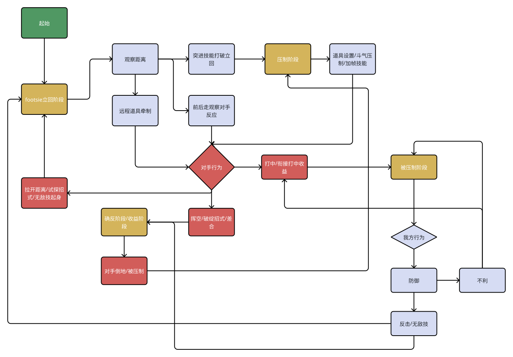
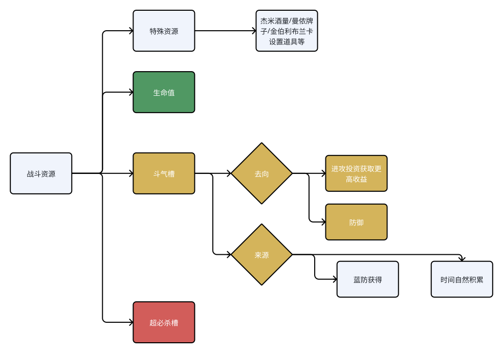

这次拆解分四层：战斗核心循环 → 博弈系统 → 战斗资源 → 角色设计差异。四层前后相连：循环图规定一局比赛的基本流程，博弈系统是流程中的选择，资源决定玩家有几个可选的动作，角色差异则是各角色在这四层上的不同设定。
两张图纸为矢量导出，按原始比例显示：图框内可上下左右拖动，文字不会糊；点图右下角的「打开原图」可在新窗口自由缩放。

| 颜色 | 性质 | 节点 |
|---|---|---|
| 绿 | 起点 | 起始 |
| 黄 | 阶段（对局所处的状态，指一段时间的局面） | footsie 立回阶段、确反阶段／收益阶段、压制阶段、被压制阶段 |
| 蓝 | 我方选项（主动交出去的行为） | 观察距离、远程道具牵制、前后走观察对手反应、突进技能打破立回、我方行为、防御、反击／无敌技、不利、道具设置／斗气压制／加帧技能 |
| 红 | 判定与结果 | 对手行为（菱形判定口）、挥空／破绽招式／差合、拉开距离／试探招式／无敌技起身、打中／衔接打中收益、对手倒地／被压制 |
先说几个术语。立回（footsie）：双方互相试探、拉近或拉开距离的阶段。确反：对手出招失误、露出破绽时，立刻打出的确定性反击。压制：对手倒地或被防住之后，持续出招逼其防守的阶段。被压制：反过来，己方被持续逼守的状态。不利：防御失败后，己方无法正常防守的状态。收益：命中或确反之后，打出连段并兑现斗气的阶段。有利帧：出招后，己方比对手先恢复行动的帧数。恢复帧：招式结束后，角色无法行动的时间。
四个黄色节点是全文的主线。后面的博弈、资源和角色差异分析，都在回答同一个问题：怎么进入某个黄色阶段，怎么离开，进入后能拿到多少，离不开会付出多少。
这张边表从画板的原始数据导出：每条连线都记录了起点和终点的编号，所以可以逐条列出。后面的分析依赖这张表，因为判定口的数量、逃逸边的数量这些性质，只能从边表读出，从图上很难直接看清。
| # | 起 | 止 | 含义 |
|---|---|---|---|
| 1 | 起始 | footsie 立回阶段 | 回合从立回开始 |
| 2 | footsie 立回阶段 | 观察距离 | 立回的第一步是量距离，先观察再出招 |
| 3 | 观察距离 | 远程道具牵制 | 出题选项 A |
| 4 | 观察距离 | 前后走观察对手反应 | 出题选项 B（不出招也算出题） |
| 5 | 观察距离 | 突进技能打破立回 | 出题选项 C |
| 6 | 远程道具牵制 | 对手行为 | |
| 7 | 前后走观察对手反应 | 对手行为 | |
| 8 | 对手行为 | 挥空／破绽招式／差合 | 判定出口 ①：对手露帧 |
| 9 | 对手行为 | 打中／衔接打中收益 | 判定出口 ②：对手吃到 |
| 10 | 对手行为 | 拉开距离／试探招式／无敌技起身 | 判定出口 ③：双方重置 |
| 11 | 挥空／破绽招式／差合 | 确反阶段／收益阶段 | 收益入口 ① |
| 12 | 确反阶段／收益阶段 | 对手倒地／被压制 | 收益的实际形式 |
| 13 | 对手倒地／被压制 | 压制阶段 | 起攻开始 |
| 14 | 压制阶段 | 道具设置／斗气压制／加帧技能 | 压制期出的题 |
| 15 | 道具设置／斗气压制／加帧技能 | 对手行为 | 压制重新汇入同一个判定口 |
| 16 | 突进技能打破立回 | 压制阶段 | 突进成功即进压制 |
| 17 | 打中／衔接打中收益 | 被压制阶段 | |
| 18 | 被压制阶段 | 我方行为 | |
| 19 | 我方行为 | 防御 | |
| 20 | 防御 | 反击／无敌技 | 逃逸出口 |
| 21 | 防御 | 不利 | 防御失败 |
| 22 | 不利 | 被压制阶段 | 循环锁死 |
| 23 | 不利 | 打中／衔接打中收益 | 被读到就吃收益 |
| 24 | 反击／无敌技 | footsie 立回阶段 | 回到立回 |
| 25 | 反击／无敌技 | 确反阶段／收益阶段 | 收益入口 ②：防守成功直接转成自己的收益 |
| 26 | 拉开距离／试探招式／无敌技起身 | footsie 立回阶段 | 回到立回 |
26 条边可以归纳成四点（「出题」指玩家主动做出的选择，「判定口」指对手在此做出应对、决定结果的节点）：
| 阶段 | 进入条件 | 本阶段做什么 | 退出条件 | 待着的代价 |
|---|---|---|---|---|
| 立回 | 回合开始；双方重置；防守成功后退回 | 量距离、出小题、逼对手先动 | 判定口给出结果 | 时间；不动也在消耗自然回复 |
| 确反／收益 | 抓到对手挥空、破绽招、差合；或防成后反击 | 打一套连段，决定投多少斗气兑现 | 对手被打倒／被防住／被反制 | 投进去的斗气不可回收；打不满就是白给 |
| 压制 | 对手倒地或被逼入防御状态 | 持续出题：设置道具、斗气压制、加帧技能 | 对手答对（逃逸）或自己被打断 | 每轮出题都要花槽；被读到直接转成被压制 |
| 被压制 | 我方在判定口失败（被打中／衔接打中） | 只剩防御与逃逸两个选择 | 防御 → 反击／无敌技 | 槽空时逃逸选项消失，只剩硬吃 → 不利 → 继续被压制 |
一局会持续到一方生命值被打空，或时间用完。这里有一个关键设计：斗气槽每回合都会重新装满。资源以回合为单位计算，不跨回合累积，所以攒着不用没有好处，系统一直在催玩家花掉。超必杀槽（见 3.5）的情况正好相反：一个是「不花就亏」，另一个是「花早了也亏」。两个槽的激励方向相反，玩家同时受两股力拉扯，这是本作节奏感的来源。
分两块来看：打投防（打击是普通攻击，投技是抓取对手的招式，防御是挡住攻击）和距离与发生速度。前者决定「答哪一道题」，后者决定「这道题来不来得及答」。
| 手段 | 克制 | 被克制 | 斗气账 | 收益 |
|---|---|---|---|---|
| 普通防御 | 打击 | 投技 | 持续扣槽 | 不掉血（槽未空时），但槽是隐性支出 |
| 蓝防 Drive Parry | 打击（含道具） | 投技 | 起手与按住持续扣槽；招架成功回复槽 | 帧优势等同防御，击退减半；完美招架（命中前 2 帧内）把对手弹成可确反 |
| 投技 | 防御、蓝防 | 打击（确反康）、拆投 | — | 蓝防状态下被投赔得更多：白烧槽＋起手／恢复帧吃惩罚 |
| 拆投 | 投技 | 打击（确反康） | — | 只有弱收益 |
| 打击（含差合、确反康） | 投技、拆投、突进恢复帧 | 防御 | — | 确反康额外给有利帧并抽对手槽（触发情形见 2.2） |
「蓝防无限克制打击」还需要加一个前提：这里的「无限」是指面对打击时，蓝防每次都是划算的。如果对手改用投技，同一个蓝防就会变成亏损。所以蓝防的优势并不完全由数值决定，还取决于对手怎么选。牵制方不必真的打赢蓝防，只要让对手觉得蓝防很安全，再用投技抓他就行。
「投技自我拆解」是这一节最值得注意的一点。投技可以被拆投克制：攻方投，守方拆，两者用的是同一个时间窗口，结果靠猜拳决定，而拆投成功的收益很小。这样设计等于给攻方保留了一个最低收益：猜拳输了，最多是被推开、掉一点血；猜拳赢了，就直接进入压制。所以投技在图中的作用，是强迫对手在判定口做选择：它把对手从「凭反应应对」逼成「凭预判应对」。
发生速度指招式从按下到开始判定所需的时间。放回循环图来看：边 8 → 11（对手行为 → 挥空、破绽或差合 → 确反／收益阶段）是立回阶段进入收益的唯一通道。也就是说，收益阶段的产生，取决于「距离」和「发生速度」两个条件的差额。谁先把对手推到「我打不到他、他也来不及反击」的距离，谁就拿到收益。把它单独列成一节是合理的，因为它是收益阶段的来源，是打投防之外独立的一环。
| 层 | 判据 | 作用 |
|---|---|---|
| 发生速度差 | 短于人类反应阈值的招式（约 15 帧；按 250ms 经验值折算） | 守方只能预判，不能反应 |
| 有效距离差 | 招式射程与突进位移量的分布 | 决定谁有资格出题 |
| 判定优先级 | 同一区域内发生快的先命中 | 让「更快」成为独立于「更远」的收益来源 |
确反康（Punish Counter）是这套比较之上的额外收益。游戏内确认会触发确反康的情形有：对手蓝防后的恢复帧、投技或打击技挥空后的恢复帧、斗气迸放后的恢复帧，以及两个迸放对撞。这份列表的意义在于：它把「抓住对手的恢复帧」做成了统一的奖励。蓝防失败、投技落空、迸放被防住或撞掉，三种性质不同的情况，受到的是同一种惩罚。所以「让对手白用一次斗气技」和「让对手空挥一次投技」在收益上是等价的。差合因此不止是掉血，还会改变对手的斗气余量。
| 层 | 判据 | 玩家靠什么 | 图上位置 |
|---|---|---|---|
| 反应层 | 发生速度差 > 反应阈值 | 预判、读习惯 | 判定口「对手行为」 |
| 预判层 | 2–3 个选项的猜拳（投／拆／打；中段／下段；防／蓝防／不动） | 上一轮的记忆 | 压制期的出题节点 |
| 策略层 | 不需要当帧反应的决定 | 槽量、位置（版边／中央）、已倒地次数、剩余时间 | 全部节点，主要在「我方行为」 |
这三层的分界，就是前面那句「几乎无法反应」。这是设计者刻意的安排：投技放在预判层，猜拳才能成立；猜拳成立，压制阶段才有可以玩的内容。

同一格斗气，既能用来进攻（绿冲、斗爆、迸放），又能用来防御（蓝防、斗气反转），还会在被动防御时被扣掉。因此：
这句话把资源和循环两部分紧紧连在一起。第一节表里「被压制」一行的代价（斗气空了 → 逃逸选项消失 → 进入不利状态 → 继续被压制），都来自这种关联。图中把「防御」和「进攻投资以获得更高收益」并列为斗气的两个去向，指的也是这一点。
图上写的斗气去向是「防御」和「进攻投资」，但还漏了两条被抽走的路径：
这说明：斗气既是自己管理的预算，也是可以争夺的资源。
图上写的斗气来源是蓝防和时间自然回复，还漏了一条，而且自然回复有个前提常被忽略：
来源侧同样有博弈。蓝防是唯一能「防守也能回槽」的来源，所以专门克制它的投技，也就必须付出更高的代价。
| 动作 | 官方名 | 消耗 | 作用 |
|---|---|---|---|
| 蓝防 | Drive Parry | 起手扣槽、按住持续消耗；成功招架回复槽 | 自动格挡打击与道具，击退减半 |
| 完美招架 | Perfect Parry | 命中前 2 帧内蓝防 | 对手被弹开、陷入可确反，慢镜给足反击时间 |
| 绿冲 | Drive Rush | 裸出（蓝防派生）1 格／拳脚取消派生 3 格 | 快速前冲，落地后第一下普通技 +4 有利帧 |
| 斗气迸放 | Drive Impact | 1 格 | 带霸体（受击时不会中断动作）的推进打击，可破防、撞墙 |
| 斗爆 | Drive Surge（OD 必杀） | 2 格 | 强化必杀，等同历代 EX 技 |
| 斗气反转 | Drive Reversal | 2 格 | 防御硬直中脱身反击，伤害低但破压制 |
| 满槽 | Drive Gauge | 6 格，每回合重置为满 | — |
绿冲的 1 格／3 格、确反康触发情形、气绝脱离方式、超必杀槽积累来源四项为游戏内实测确认。蓝防消耗采用第三方帧数据口径（起手半格、按住约每秒 0.3 格，1 格＝10,000 meter），作为数值基线引用。命中与被命中的回槽量只写方向，不写格数。人类反应阈值按常见经验值 250ms 折算，60 帧／秒下约 15 帧，属人类平均值，不是本作数据。
绿冲的 +4 值得单独说明：它解释了为什么「绿冲能从立回进入压制、获得局部优势，并逼对手猜拳」。绿冲落地后，接着打出的第一下普通技会有 +4 帧的有利帧。攻方必然处在对手要答一道题的位置。猜拳对绿冲来说是绿冲带来的好处，本身不构成风险。
1 格和 3 格之间相差三倍，而且正好对应循环的两个阶段：裸出绿冲花 1 格，是从立回进入压制的入场费；拳脚取消绿冲花 3 格，是在已经命中或防住对手之后，收益与压制阶段内的追加投入。同一个动作，由于出现在循环的不同位置，价格相差三倍。3 格是满槽的一半。花完之后，防御方可用的斗气就少了一半：蓝防一起手就要扣槽，斗气反转要 2 格，取消绿冲之后如果被反击，很可能已经没有足够的斗气做反转。所以这里真正的代价，不只是那 3 格，还有花完以后剩下的斗气。
街霸 6 默认的模式是反磨血（磨血指用远程攻击慢慢消耗对手的血量）：只要斗气还在，防御就不掉血。于是「用远程道具无风险消耗对手血量」这种传统街霸的打法就失效了。斗气打空后进入气绝，防御开始掉血，受伤和眩晕的效果加重，五种斗气技全部不能用，游戏切回传统街霸的玩法。
这句判断的价值比它本身更大：气绝更像是一个模式切换开关。它让「抽干对手斗气」成为一条独立的获胜路线。你不必打空他的血量，只要打空他的斗气，他的防御就从免费变成要付代价。引文前半句说气绝「限制传统牵制魔血手段」，后半句的意思是：磨血的手段并没有消失，只是转移到了斗气这条「第二血条」上。
脱离气绝的机制已通过实测确认：气绝期间斗气会继续自然回复，等待就能回满。这让「模式开关」的强度很有分寸：气绝是有时限的惩罚，不会永久把对手打垮。所以抽干对手斗气的战术价值，不在于「直接结束对局」，而在于争取一段窗口：这段时间里对手不能用斗气技，防御开始掉血，受到的伤害和眩晕也更重，传统的磨血、压起身打法重新变得有效。窗口结束后，对手又拿回了全部应对手段。设计上的推论是：气绝的时长就是这个模式的默认配额。调整它，就等于直接调整「传统打法能回来几次」，比逐个修改招式更省成本。
| 斗气槽 | 超必杀槽 | |
|---|---|---|
| 决策频率 | 高频、小额（每几秒一次） | 低频、大额（一局几次） |
| 花光后果 | 气绝，惩罚 | 无惩罚，只是没有 |
| 攒着不用 | 满槽即浪费 | 回合结束清零 |
| 对应循环位置 | 四个阶段全部 | 主要是收益阶段的兑现点，以及被压制阶段的无敌逃逸 |
斗气催你花，超必杀等你攒。玩家同时被两股力拉扯，这是「资源感」的来源。
超必杀（消耗超必杀槽的强力招式）槽的积累来源，四项都已通过实测确认：命中对手、被命中、防御成功、蓝防与斗气技。把它和 3.2 的斗气收支并排看，会发现一个之前没有写出来的规律：同一个动作，可能让两条槽朝相同或相反的方向变化：
| 动作 | 斗气槽 | 超必杀槽 |
|---|---|---|
| 蓝防成功 | 回 | 涨 |
| 普通防御 | 扣 | 涨 |
| 被命中 | 扣 | 涨 |
| 命中对手 | 涨 | 涨 |
所以防守一方出现了不平衡：蓝防是防守动作中唯一能让两条槽同时上涨的操作（进攻中命中对手也会让两条槽同时上涨，但那需要先拿到一次收益）。普通防御则是「斗气下降、超必杀上涨」。这也解释了为什么要用投技来克制蓝防：蓝防带来双倍好处，那么反制它的收益也需要是双倍的。
另一半解释在被压制阶段：挨打同样会增加超必杀槽。所以「被压制」在循环图上还带着一条出口，它的出口除了 防御 → 反击／无敌技，还有一条隐性出口：攒够超必杀槽后，用带无敌的超必杀打断压制。这条隐性出口，正是第一节「被压制」一行写着「斗气空了，逃逸选项消失」，却仍然不至于必死的原因。
图上列出了杰米的酒量、曼侬的牌子，以及金伯利和布兰卡的设置道具。按它们与循环的关系，可以分成三类：
| 类型 | 例子 | 接进循环的位置 |
|---|---|---|
| 与通用资源直接兑换型 | 杰米酒量：酒量较低时部分招式命中会回斗气 | 多一个斗气来源，直接改变 3.2 那张收支表 |
| 设置／占地型 | 布兰卡蚁穴炸弹、金伯利喷雾罐（落地留场） | 对应图上边 14 的「道具设置」，是压制阶段的出题素材 |
| 累积解锁型 | 曼侬牌子：攒够才换出高收益动作 | 改变收益阶段的上限 |
设计含义：通用的循环图保持不变，每个角色靠自己的专属资源，决定自己能走哪几条边、在哪个阶段多拿一层收益。所以专属资源决定角色在循环图上走哪条专属路线，是玩法结构的一部分。
角色之间的差异，主要不在招式本身，而在循环图上哪几条边是通的。
直接对应 1.2 的边：
第五问最容易被忽略，但它决定角色的下限。四类原型里，有三类被标注了「被压制阶段能力弱（缺少能跳回立回的招式，或招式性能差）」。这一条在五个问题里最有参考价值。
| 原型 | 立回 | 进压制 | 压制出题 | 收益 | 逃出被压制 | 代表 |
|---|---|---|---|---|---|---|
| 标准 | 有远程道具 | 只有绿冲（斗气投资） | 中等，无设置类压起身 | 一般 | 有起身无敌技 | 隆、肯、卢克 |
| 突进／压制 | 弱或缺少牵制手段，主动破坏立回 | 突进能力强、手段多 | 出题能力最强（设置／多种起攻） | 单次收益偏低 | 弱或缺 | 金伯利、DJ、亚斯敏 |
| 重型 | 移动弱、缺牵制，拳脚判定撑住立回 | 靠对手进来 | 强（指令投等） | 火力恐怖 | 弱或缺 | 桑吉尔夫等 |
| 牵制 | 强，牵制手段丰富 | 少（移动弱） | 多种出题手段 | 正常或偏低 | 弱，但有独特转换攻防手段（换位等） | 达尔西姆 |
标准角色的定义值得单独看：它的特点是五个问题都有合格的答案：有远程道具，有绿冲，有起身无敌技（倒地起身时无敌、能跳回立回阶段的招式），收益一般，压制能力中等。标准角色是这张表的基准答案，其他三类都是「牺牲某一问，换取另一问的强项」。把「起身无敌技」写进标准角色的定义，说明：能否逃出被压制，是判断角色是否完整的基本线。
设计时最需要关注的是下面三点，三角关系本身排在其后：